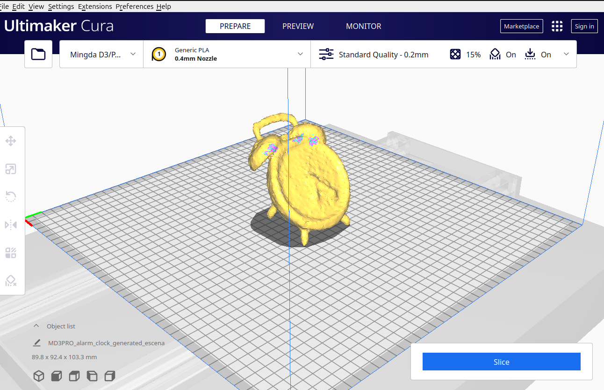
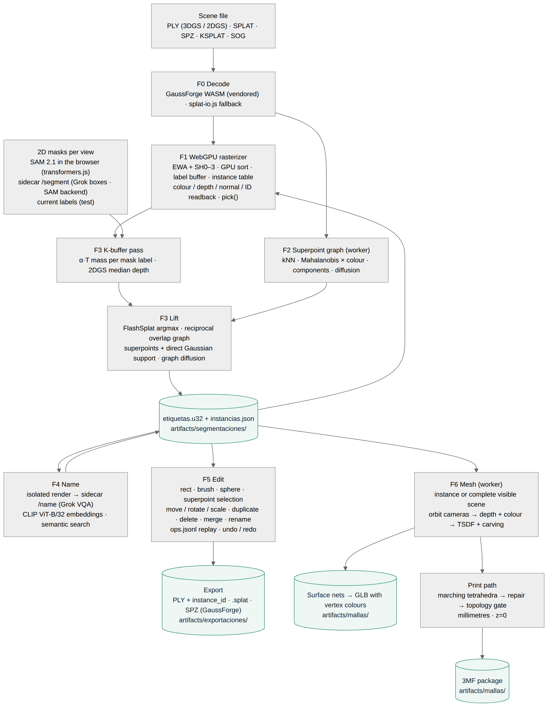
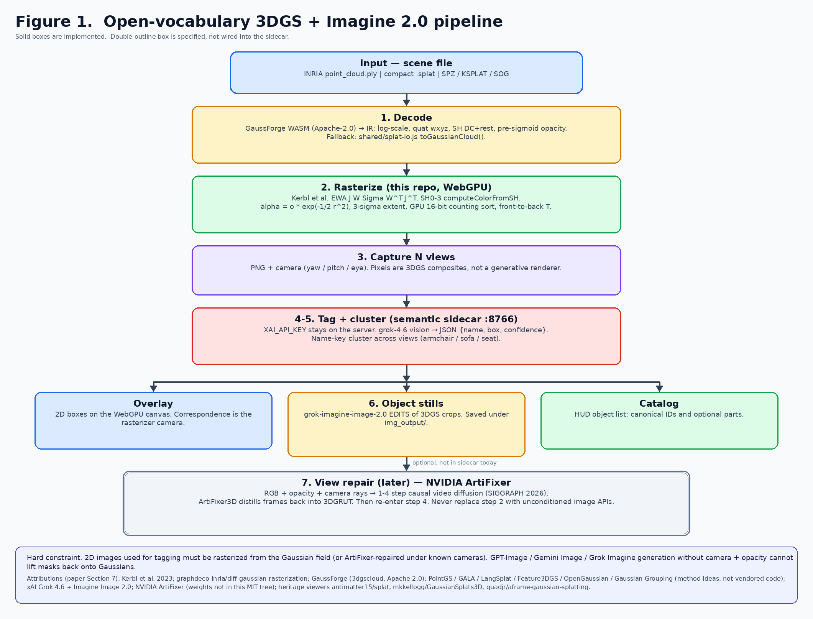
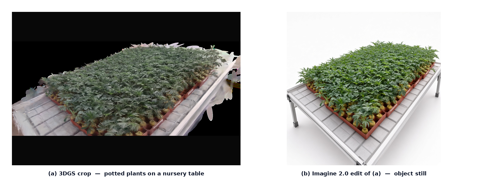

Decode & render
Load six Gaussian formats through vendored GaussForge, preserve float covariance and SH, then render paper-style EWA ellipses with a GPU counting sort.
Decode a radiance field, discover its objects, edit them, and reconstruct a coloured GLB or topology-gated 3MF—all in one browser lab. Start with the shipped alarm-clock scene; no build step and no scene upload.

03 3MF in slicerThe core path stays client-side. Web Workers handle the expensive graph and meshing stages while WebGPU handles sorting, rasterization, contribution tracking, picking, and readback.
Load six Gaussian formats through vendored GaussForge, preserve float covariance and SH, then render paper-style EWA ellipses with a GPU counting sort.
Build kNN superpoints, lift 2D masks into Gaussian labels with α·T contributions, name instances, and search them with optional CLIP embeddings.
Select, transform, duplicate, hide, merge, and rename objects with a replayable operation log. Export Gaussian formats, a coloured GLB, or a checked 3MF in millimetres.

Every stage has a concrete browser module, deterministic test fixtures, exportable artifacts, and deployment gates.
The technical report connects the browser implementation to the rendering, open-vocabulary, editing, and reconstruction literature. These are its three core illustrations; Figure 3 appears above.
Read the full paper ↗

The browser now implements the path from a Gaussian instance—or the complete visible scene—to a repaired, millimetre-scale 3MF. It blocks files that fail its topology gate; slicer and physical-process validation remain external.
Select or segment one instance, or choose the complete visible scene. For geometry, prefer a 2DGS/GOF source.
Orbit cameras render depth and colour. TSDF fusion feeds fast surface nets for GLB or marching tetrahedra for printing.
Weld vertices, clean faces, orient winding, fill bounded holes, then reject open or non-manifold output.
Scale the longest dimension in millimetres, rest the part on z=0, export 3MF, then inspect walls, orient, slice, and print.
Use the WebGPU workspace for the complete pipeline, or open a smaller viewer when compatibility and inspection matter more than editing.
Full 3DGS, identity, segmentation, naming, editing, export, and meshing.
A lightweight WebGL path for 32-byte SPLAT and PLY scenes.
Kellogg-style WebGL rendering with 32-byte and 44-byte support.
Place Gaussian scenes in an A-Frame world with familiar controls.
Convert PLY and both SPLAT layouts directly on your device.
Methods, measured results, pipeline diagrams, references, and licenses.
point_cloud.ply for full SH3 rendering.
Grok vision, instance naming, Imagine cards, and saving artifacts require the loopback Python
sidecar. It is never deployed to GitHub Pages, and your XAI_API_KEY never reaches this site.